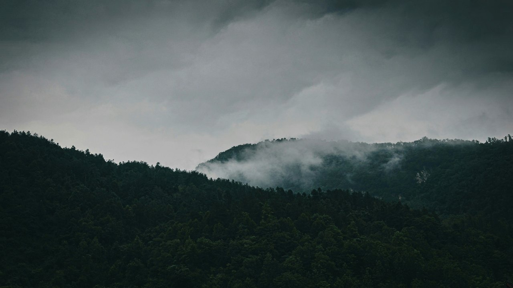
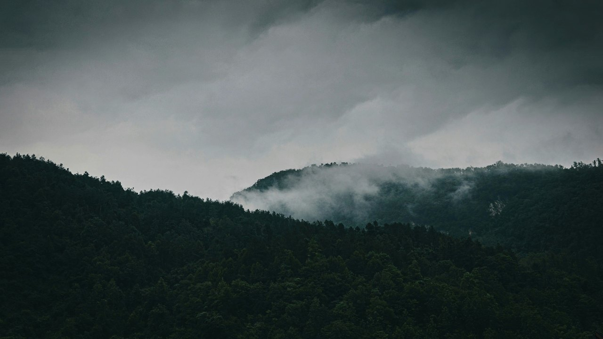
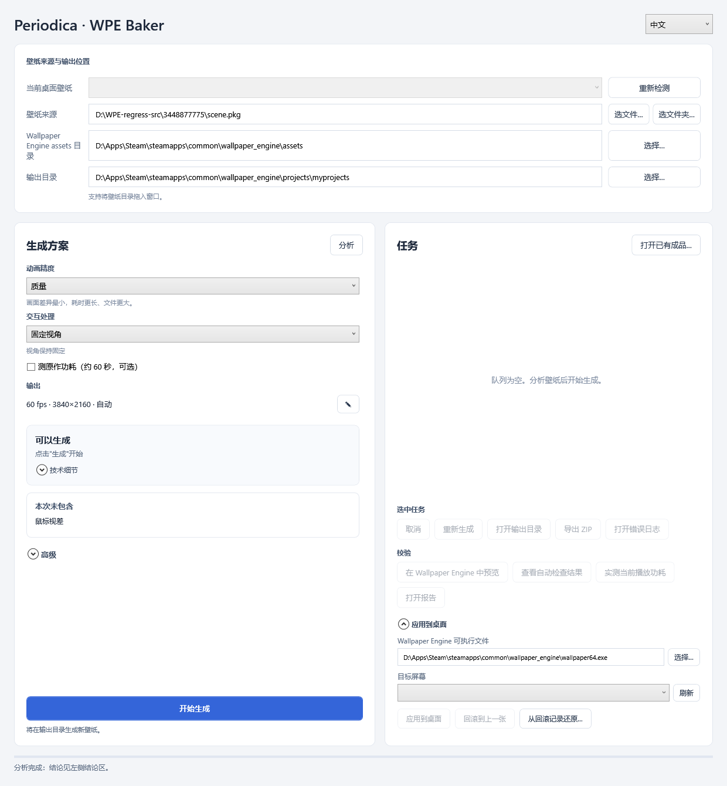
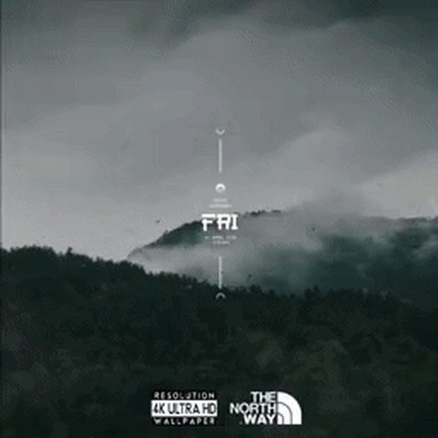
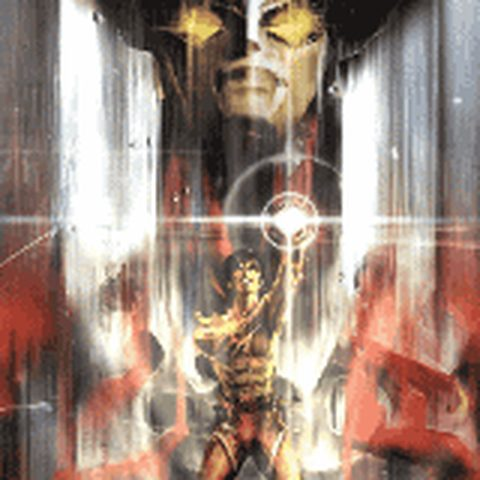

Periodica 会为 Wallpaper Engine 场景中的全部动画建立数学模型，并重新调整各动画的周期，直到整个场景首尾闭合成一个完整循环，然后以视频形式播放。视觉效果几乎不变；无论插电还是使用电池，GPU 负载和功耗最高可降低 96%。它的第一个实际应用是面向 Wallpaper Engine 的 WPE Baker。
普通的帧对比工具只能猜测视频大概会在哪里重复。Periodica 则直接读取产生运动的数学方程，包括着色器时间、动画轨道、粒子循环以及视频时间基准，并重新调整它们，使所有内容共享同一个公共周期。拖动分隔线，可以比较上方 50 秒循环的第一帧和最后一帧。


第 1 帧第 3,000 帧假设一个波浪动画的周期是 7.3 秒，一个摆动是 11.1 秒，一个粒子循环是 4.6 秒，一段视频又是 20 秒，它们几乎不可能再次同时回到起点。直接录制视频的话，可能要录上几个小时才能接近重复，而且最后依然会出现明显切口。Periodica 会分别求出每个组件自身的周期，然后只对它们的播放速度做不到 1% 的微调，让所有组件最终共享一个公共循环周期。也就是说，它会创造出一个原作者从未实际制作过的统一周期。
三个预设限制了任意组件允许被重新定时的最大幅度：效率（Efficiency）5%，平衡（Balanced）3%，质量（Quality）采用仍然能够闭合循环的最小改动。百合场景中的 100 个周期性组件最终被协调为一个 180.4 秒的统一循环；虹夏的 20 个组件被协调到 44 秒；绫波丽的场景则以总计 4.68% 的重新定时幅度，在 56.2 秒处实现完整闭合。
最慢的可见组件在每个循环中至少会完整运行三次；可见漂移始终保持在 0.2 像素/秒以内；摆动类动画只调整频率，绝不改变运动路径。每一个组件的重新定时幅度都有单独上限，并且会全部记录在报告中。如果这些规则无法满足，对应图层就会继续保持实时运行，报告也会明确指出究竟是哪一层。
每个输出都会额外渲染到循环点之后，然后逐个区块与原始场景的下一帧进行比较。只有比较通过，输出才会被接受。这可以证明循环确实能够闭合；与此同时，每个组件各自的调整预算又限制了它在整个循环过程中相对于原始运动可能产生的偏移。
两个主要控制项，加一个最终判定。"动画精度（Animation precision）"决定任何动画允许重新定时到什么程度；"交互处理（Interaction）"决定由输入驱动的内容如何处理。进阶选项在"高级"中，供专业用户使用。
文件夹位于 steamapps\workshop\content\431960。输出目录会直接使用 Wallpaper Engine 自己的项目文件夹，因此生成结果会自动出现在 Wallpaper Engine 的壁纸列表中。
质量、平衡和效率代表可见变化的预算，默认使用平衡。如果当前预算下无法闭合循环，程序会自动降低等级重试，并最终告知使用的方案。交互处理则有保留、固定视角和关闭三种，决定鼠标与音频驱动的效果如何处理。时钟、日期以及媒体文本在任何模式下都保持实时运行。
程序只会给出四种固定状态之一。"本次未包含"会列出哪些内容没有被纳入烘焙。如果当前的设置组合无法闭合，而另一组设置能够成功，报告会给出一个可以单击直接应用的建议。

测试平台为搭载 Intel Arc B390 的笔记本电脑，使用官方 Wallpaper Engine，以 60 fps 进行 A/B/B/A 测试，并读取 RAPL iGPU 功耗轨。对比对象为原始场景与其对应的烘焙输出。


| 壁纸 | 原始功耗 | 烘焙后 | 变化 | 处理路线 |
|---|---|---|---|---|
| 虹夏（孤独摇滚！）3650475846 | 22.51 W | 1.86 W | −91.7% | 整帧（whole frame） |
| Alone（日/夜场景）3448877775 | 5.66 W | 1.05 W | −81.5% | 状态拆分 + 图层 |
| 亚托莉 · My Dear Moments3669681034 | 8.45 W | 0.81 W | −90.4% | 效果前缀（effect prefix） |
| 奥特曼雷欧3685247684 | 9.13 W | 2.46 W | −73.0% | 效果前缀 + 实时图层 |
| 百合3572877776 | 2.38 W | 0.71 W | −70.3% | 整帧 |
| 芙莉莲 · Pagoda of flowers3426865175 | 10.09 W | 3.50 W | −65.3% | 固定视角 + 图层 |
| Lost Landscape 33713073223 | 8.11 W | 3.48 W | −57.1% | 效果前缀 |
| 绫波丽3258032485 | 2.29 W | 0.19 W | −91.8% | 整帧 |
一个重型壁纸在 120 fps 下，给 GPU 带来的开销大约是 60 fps 的两倍，但一个完整烘焙的输出几乎感觉不到这种变化：视频解码器负责主要工作，3D 引擎基本处于空闲状态。这个项目最初就是在一台使用 iGPU 的笔记本电脑上开始的。
| 壁纸 | 原版 60 → 120 fps | 烘焙版 60 → 120 fps | 烘焙版 120 fps 相比原版 60 fps | 120 fps CPU Package 功耗 |
|---|---|---|---|---|
| 亚托莉3669681034 · 效果前缀 | 8.45 → 16.25 W | 0.81 → 1.51 W | −82% | 30.3 → 12.2 W（−60%） |
| 绫波丽3258032485 · 整帧 | 2.29 → 7.77 W | 0.19 → 0.31 W | −86% | 19.6 → 10.9 W（−45%） |
| 百合3572877776 · 整帧 | 2.38 → 6.70 W | 0.71 → 1.35 W | −43% | 19.7 → 12.3 W（−38%） |
| 奥特曼雷欧3685247684 · 效果前缀 + 实时图层 | 9.13 → 17.29 W | 2.46 → 8.80 W | −4% | 30.1 → 20.6 W（−31%） |
| 亚托莉在显示器完整 165 Hz 下 | 原始 | 烘焙后 | 变化 |
|---|---|---|---|
| iGPU 功耗轨 | 26.03 W | 3.95 W | −84.8% |
| CPU Package | 41.44 W | 15.36 W | −62.9% |
| 3D 引擎忙碌率 | 86.9% | 29.2% | 其中解码器占 21.8% |
默认模式：固定视角。时钟、日期和媒体文本在任何模式下都会继续实时运行。保留：实验性，可能增加 GPU 占用。
Wallpaper Engine 的场景格式没有公开文档。想要在离线环境中做到逐帧完全一致地渲染，就必须处理数百种着色器变体、粒子系统、脚本控制器和视频图层。
GPT-6 Astra 构建了一个用于 Wallpaper Engine 场景的多线程 Vulkan 离线渲染器、解析式周期求解器、图层分配器、带硬件解码校验的编码流水线，以及功耗测量系统。随后，它又进一步优化了整个流水线的性能：一个包含 25,599 帧的场景，烘焙时间从 2,566 秒缩短到了 214 秒；完整的 78 个场景库可以在单个 GPU 任务槽位上，于一个下午内全部完成烘焙。
分析与生成共用同一套准入判定；失败不自动重烘；默认平衡精度、固定视角；最多四组视频；经过验证的一键建议；昼夜状态拆分。
将烘焙后的视频作为一个图层放回原始场景内部，这样鼠标指针效果和音频响应效果仍然可以继续覆盖在它上面运行，并只承担这些实时效果自身的计算成本。
以原分辨率的一部分进行烘焙，并加入亚像素抖动；播放时，再利用离线求出的运动矢量对画面进行重建。这样得到的输入信息比游戏中的 DLSS 所能获得的更好，而播放端只需要承担一小部分视频解码开销。
手机动态壁纸、锁屏、信息亭、直播背景。Wallpaper Engine 只是 Periodica 首先进入的屏幕。
你喜欢的壁纸以最高刷新率和最高画质运行，而风扇保持安静。这就是这个工具存在的全部理由。
轻量场景本身没有多少可节省的空间，工具会在渲染之前直接说明。功耗较高、以周期性动画为主的场景才是 46–96% 降幅的来源；以交互为主的场景则会烘焙其中确定性的核心部分，其余内容作为输入处理。
可见变化预算由你选择：效率、平衡或质量。报告会逐项列出每一个被重新定时的组件及其精确百分比。接缝会根据原始场景自身的运动进行验证，通过之后输出才会被接受。
Windows、Wallpaper Engine，以及一块用于离线渲染的 GPU。便携版没有安装程序，也不需要 Python。烘焙一个典型场景需要几分钟；播放只需要硬件视频解码。
是。工具层采用 MIT 许可，渲染器采用 GPL v2；完整源码、第三方声明与构建记录都在仓库中。